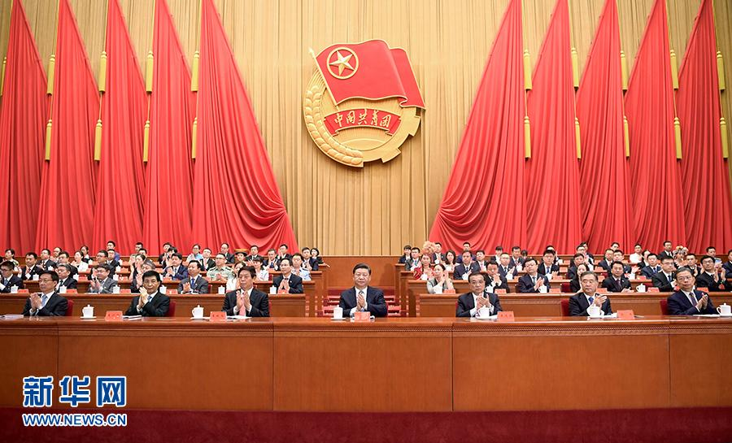
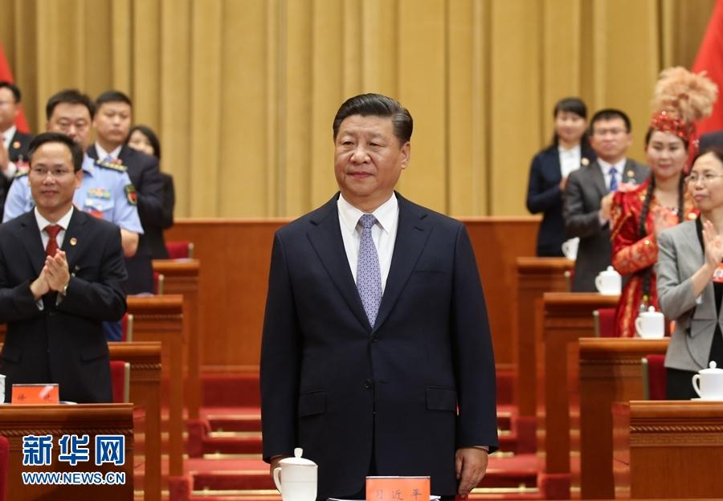

中国共产主义青年团第十八次全国代表大会在京开幕
桂电志愿者网 日期：2018-06-27 来源：新华网

6月26日，中国共产主义青年团第十八次全国代表大会在北京人民大会堂开幕。习近平、李克强、栗战书、汪洋、王沪宁、赵乐际、韩正等在主席台就座，祝贺大会召开。新华社记者 李学仁 摄
中国共产主义青年团第十八次全国代表大会在京开幕
习近平李克强栗战书汪洋赵乐际韩正到会祝贺
王沪宁代表党中央致词
新华社北京6月26日电（记者邹伟、荣启涵）中国共产主义青年团第十八次全国代表大会26日上午在人民大会堂开幕。习近平、李克强、栗战书、汪洋、赵乐际、韩正等党和国家领导人到会祝贺，王沪宁代表党中央致词。
人民大会堂万人大礼堂气氛热烈。主席台上方悬挂着“中国共产主义青年团第十八次全国代表大会”的会标，后幕正中悬挂的团徽熠熠生辉，10面鲜艳的红旗分列两侧。二楼眺台上悬挂着“高举习近平新时代中国特色社会主义思想伟大旗帜，在中国共产党坚强领导下，不忘初心，牢记使命，奋力谱写决胜全面建成小康社会、全面建设社会主义现代化国家的壮丽青春篇章！”巨型横幅。1500多名来自全国各地的团十八大代表，肩负着8100多万共青团员的重托出席大会。

6月26日，中国共产主义青年团第十八次全国代表大会在北京人民大会堂开幕。这是中共中央总书记、国家主席、中央军委主席习近平在主席台向与会代表致意。新华社记者 姚大伟 摄
上午9时30分，中共中央总书记、国家主席、中央军委主席习近平等步入会场，全场响起热烈的掌声。
大会主席团常务委员会委员贺军科宣布大会开幕。全体起立，高唱国歌、团歌。
随后，10名少先队员向大会献词。他们有的来自革命老区，有的来自民族地区，有的是勤学孝老的好榜样，有的是热心公益环保的好少年。少先队员响亮的声音表达了对美好未来的期待，展现了立志全面发展，为实现中华民族伟大复兴的中国梦作准备的决心。
王沪宁代表党中央发表了题为《乘新时代东风 放飞青春梦想》的致词。王沪宁首先向大会的召开表示热烈祝贺，向全国各族青年、全体共青团员和广大青少年工作者致以诚挚的问候。
王沪宁在致词中说，在以习近平同志为核心的党中央坚强领导下，团十七大以来，共青团提高政治站位、增强“四个意识”，坚决维护以习近平同志为核心的党中央权威和集中统一领导，锐意进取、真抓实干，深入推进共青团改革，狠抓从严治团，各项工作实现新发展，团干部团员面貌呈现新气象。广大青年自觉把个人奋斗融入党和人民的共同奋斗中，展现出当代青年爱党爱国的坚定信念、勇于创造的生机活力、甘于奉献的优良品格、自信开放的国际形象。
王沪宁表示，习近平总书记关于青年工作的重要思想，为做好新时代党的青年工作指明了前进方向。实现党的十九大提出的决胜全面建成小康社会、开启全面建设社会主义现代化国家新征程的宏伟蓝图，当代青年重任在肩。希望广大青年牢记习近平总书记的谆谆教诲，始终坚定理想信念，着力锤炼高尚品格，不断增长能力才干，永远保持奋斗精神，勇于投身创新创造，勇当实现中华民族伟大复兴的生力军，奏响新时代的青春之歌。
中华全国总工会党组书记、书记处第一书记李玉赋代表中华全国总工会、中华全国妇女联合会、中国文学艺术界联合会、中国作家协会、中国科学技术协会、中华全国归国华侨联合会、中华全国台湾同胞联谊会、中国残疾人联合会向大会致贺词。贺词指出，各群团组织要发挥各自优势，加强相互支持，密切团结协作，共同书写新时代党的群团事业新篇章。
贺军科代表共青团第十七届中央委员会作了题为《高举习近平新时代中国特色社会主义思想伟大旗帜 奋力谱写决胜全面建成小康社会 全面建设社会主义现代化国家的壮丽青春篇章》的报告。报告分为8个部分：进入新时代的中国青年和共青团；强国时代青年的历史使命；用习近平新时代中国特色社会主义思想统领共青团工作；培养担当民族复兴大任的时代新人；青春建功新时代；大力促进青年发展；共青团改革再出发；全面从严治团。
中共中央书记处书记，全国人大常委会、国务院、全国政协、中央军委有关领导同志出席会议。
中央和国家机关有关部门、各人民团体、北京市负责同志，部分在京离退休的曾在团中央书记处工作的领导同志，首都各族各界团员青年代表参加开幕式。
【责任编辑：李彦龙】